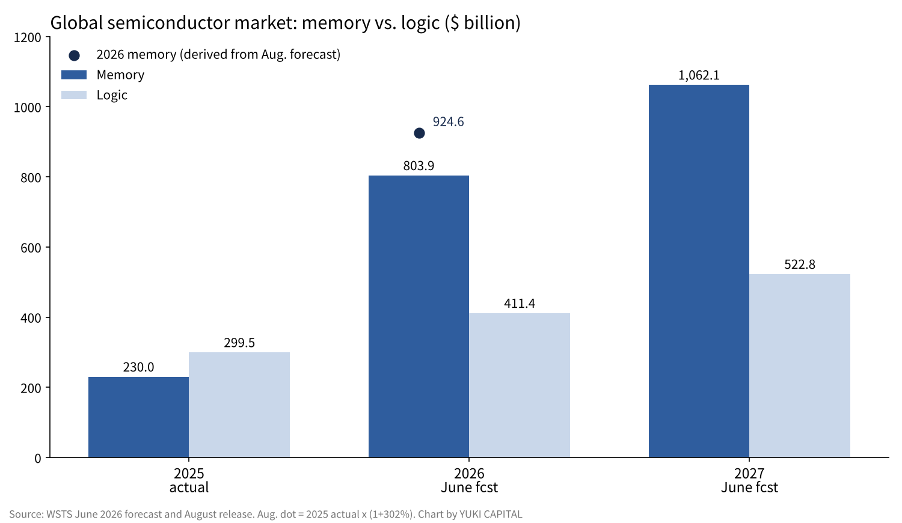
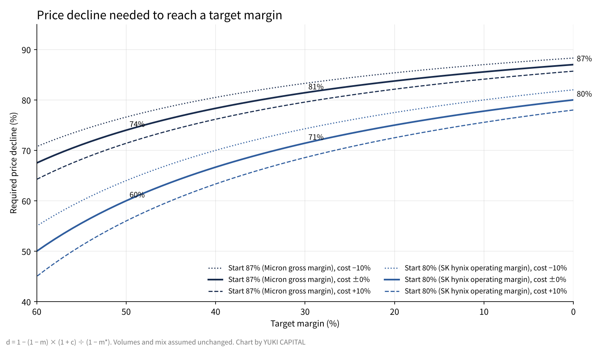

How far can memory prices fall before the profits disappear? Working backward from Micron, SK hynix and Kioxia results
In June 2026, World Semiconductor Trade Statistics (WSTS) forecast that the global memory market would grow 3.5 times, from $230.0 billion in 2025 to $803.9 billion in 2026 [1]. In its August release, it raised the 2026 growth figure further, to 302% [2].
Over the same period, Micron Technology's gross margin reached 87.0%, and SK hynix's operating margin reached 80% [3][4]. Kioxia also posted a non-GAAP operating margin of 80.2% for July–September [6].
This piece asks one question. How far can selling prices fall before today's memory margins turn to losses? I work backward from the reported numbers and move the assumptions to get a range.

Question and background
First, four definitions. DRAM is semiconductor memory that temporarily holds data during computation; its contents vanish when power is cut. NAND is flash memory that keeps its contents without power, used in SSDs and smartphone storage. HBM (high-bandwidth memory) stacks DRAM vertically and places it right next to AI processors, widening the path for data. Gross margin is the share of revenue left after subtracting the cost of goods sold.
Memory has long been seen as an industry with large boom-and-bust swings. Factories take years to build, while the products are close to commodities, so prices drop sharply once supply exceeds demand.
I framed the question as a price decline because how much of a drop margins can absorb, more than the margin level itself, is the yardstick for how deep the next downturn could go.
Data and method
I use five primary sources: the WSTS Spring 2026 forecast (June 2) and Q2 release (August 6) [1][2]; Micron's fiscal Q4 2026 results filed with the US Securities and Exchange Commission (September 30, quarter ended September 3) [3]; SK hynix's Q3 2026 results (October 27) [4]; and the September 2026 ICT trade statistics from Korea's Ministry of Trade, Industry and Resources and Ministry of Science and ICT (October 14) [5]. Kioxia's July–September 2026 figures come from press coverage [6].
The calculation is a single formula. With margin m, cost of goods C and selling price P, m = 1 − C ÷ P. If price falls by a share d and cost changes by a share c, the decline that brings the margin to a new level m* is d = 1 − (1 − m) × (1 + c) ÷ (1 − m*).
The formula treats each company as a single product and assumes volumes and product mix stay the same. SK hynix and Kioxia do not report gross margin in the same form, so I use operating margin for them. Operating margin is after selling and other expenses, so it gives a smaller room for price declines than gross margin would.
Results: the market and the three companies
| Item | Figure | Source |
|---|---|---|
| Global memory market, 2025 (actual) | $230.0 billion (+39.0% y/y) | WSTS [1] |
| Global memory market, 2026 (June forecast) | $803.9 billion (+249.5%) | WSTS [1] |
| Global memory market, 2027 (June forecast) | $1,062.1 billion (+32.1%) | WSTS [1] |
| Memory, 2026 (August forecast growth) | +302% (about 4.0x 2025) | WSTS [2] |
| Micron fiscal Q4 2026 revenue (quarter ended Sep 3) | $54.23 billion (year earlier $11.32 billion) | Results [3] |
| Micron gross margin (non-GAAP) | 87.0% (next-quarter guidance 86.25%) | Results [3] |
| SK hynix July–September revenue | 104.6 trillion won (+328% y/y) | Results [4] |
| SK hynix operating margin | 80% (year earlier 47%) | Results [4] |
| Kioxia July–September revenue | ¥2.48 trillion ($15.73 billion) | Press [6] |
| Kioxia non-GAAP operating margin | 80.2% | Press [6] |
| Korea semiconductor exports, Sep 2026 | $60.33 billion (+262.8% y/y) | Korean government [5] |

At the market level, memory is forecast to be about twice the size of logic in 2026 [1]. In 2025 memory was smaller than logic, so the order flips in a single year.
The company figures point the same way. Micron's fiscal 2026 revenue was $133.19 billion, 3.6 times the prior year's $37.38 billion [3]. SK hynix's quarterly revenue topped 100 trillion won for the first time in July–September [4].
The rise has not stopped yet. Micron expects next-quarter revenue (quarter ending early December) of about $61.5 billion and gross margin of about 86.25%, so revenue climbs another step while margin stays roughly flat [3].
National statistics show the same movement. Korea's September 2026 ICT exports were $75.15 billion, of which semiconductors were $60.33 billion [5]. Semiconductors alone made up about 80% of ICT exports, 3.6 times the level of a year earlier.
Kioxia's numbers can be explained almost entirely by price times volume. According to reports, its average selling price rose by the mid-20s percent from the prior quarter, and bit shipments rose by the low teens [6]. 1.25 × 1.12 is about 1.40, close to the roughly 40% obtained by dividing the revenue increase of ¥712.9 billion ($4.52 billion) by the prior quarter's roughly ¥1.7671 trillion ($11.21 billion).

Results: how far prices can fall before losses
| Starting margin | To 50% margin | To 30% margin | To 0% (break-even) |
|---|---|---|---|
| Micron gross margin 87.0% | 74% | 81% | 87% |
| SK hynix operating margin 80% | 60% | 71% | 80% |
| Kioxia operating margin 80.2% | 60% | 72% | 80% |
If costs stay the same, Micron keeps a gross profit until prices fall 87%. SK hynix and Kioxia also need about an 80% price drop before operating profit disappears. Even bringing the margin down to 30% requires prices to fall roughly 70–80%.
Sensitivity analysis

| Cost change | Micron 87%→30% | SK hynix 80%→30% | SK hynix 80%→0% |
|---|---|---|---|
| −10% (cheaper with volume production) | 83% | 74% | 82% |
| 0% (unchanged) | 81% | 71% | 80% |
| +10% (higher on new-fab depreciation) | 80% | 69% | 78% |
| +30% (much higher on the move to leading-edge processes) | 76% | 63% | 74% |
Across four assumptions, the required decline does not fall below 60%. Even in the harsh case where costs rise 30%, bringing SK hynix's operating margin down to 30% needs a 63% price drop.
What drives this formula is the margin level itself. Once the starting margin exceeds 80%, costs are 20% of revenue or less. A 10% swing in costs moves only about 2% relative to revenue.
Discussion
There are two opposing views. The first is that supply will grow. Micron's fiscal 2026 capital spending was $27.37 billion, and SK hynix says it will raise investment significantly in 2027 [3][4]. Once new fabs ramp, prices could come back down as fast as they went up.
The second is that averages hide what is inside. Prices for HBM and server products are set by contract, while those for general-purpose smartphone and PC parts are set in the market. Even with a company-wide margin of 80%, the room for decline on general-purpose parts alone may be far smaller.
On the other hand, demand is locked in by contracts. SK hynix has signed long-term agreements, mostly five years, with 14 major customers, covering more than half of its 2027–2028 capacity [4]. The company expects supply to lag demand through 2030 [4].
The limits of the data are also clear. None of the three companies discloses per-product prices, so this calculation is a rough guide worked backward from company-wide margins. WSTS rewrote its 2026 growth figure substantially within half a year, so the forecasts themselves move [1][2].
I set three checkpoints. Whether Micron's gross margin for the next quarter (ending early December) holds at the guided 86.25% [3]. Whether WSTS's next forecast raises or lowers its 32.1% growth figure for memory in 2027 [1]. And how far Korea's year-on-year semiconductor export growth slows month by month [5].
Conclusion
Working backward from the results, today's three memory makers can stay profitable until selling prices fall 60–80%. Moving costs from −10% to +30% does not change that conclusion.
SK hynix's and Kioxia's operating margins also fall below 50% when prices drop 60%.
So even if the next downturn comes, there is a long way to go before losses. The question is less whether profits remain and more how fast prices come back down, and that is set by when long-term contracts expire and when new fabs come online.
How I see it
I do not own a single share of a semiconductor company. I think AI companies go through an "investment phase," when they pour money into facilities, and a "payback phase," when they go after profits. Today's memory numbers show we are in the middle of the investment phase.
I think that as chip performance improves, the makers will eventually end up on the side with surplus. When Kioxia fell as much as 13% on November 4, I did not feel anything in particular. What I hold are AI companies on the side that earns in the payback phase, and these numbers do not change my allocation.
References
- World Semiconductor Trade Statistics (WSTS), "WSTS Semiconductor Market Forecast Spring 2026," 2026-06-02 https://www.wsts.org/esraCMS/extension/media/f/WST/7618/WSTS_FC-Release-2026-May.pdf
- World Semiconductor Trade Statistics (WSTS), "WSTS Q2 2026 Release," 2026-08-06 https://www.wsts.org/esraCMS/extension/media/f/WST/7745/WSTS-Q2-Release-2026-08-06.pdf
- Micron Technology, "Form 8-K Exhibit 99.1: Fiscal Q4 2026 results," 2026-09-30 https://www.sec.gov/Archives/edgar/data/0000723125/000072312526000018/a2026q4ex991-pressrelease.htm
- SK hynix, "SK hynix Announces 3Q26 Financial Results," 2026-10-27 https://www.placera.se/pressmeddelanden/sk-hynix-announces-3q26-financial-results-20261028
- Korea Ministry of Trade, Industry and Resources and Ministry of Science and ICT, "ICT trade trends, September 2026," 2026-10-14 (via KDI Economic Information Center) https://eiec.kdi.re.kr/policy/materialView.do?num=288070
- Business+IT, "Kioxia July–September 2026 results," 2026-10-30 https://www.sbbit.jp/article/st/187973
Photos: Laura Ockel, Taylor Vick (Unsplash). Charts by YUKI CAPITAL
I record my daily numbers and decisions on X.